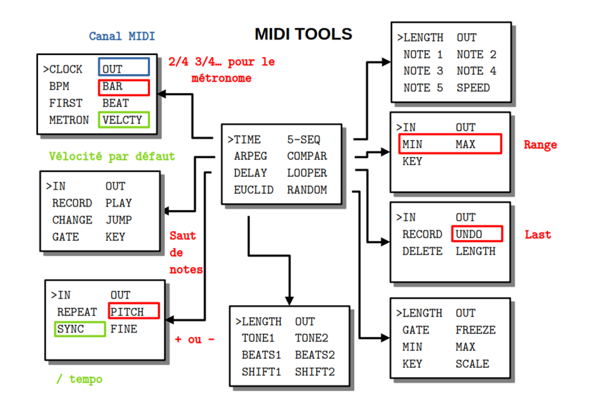

MIDI_TOOLS

PRÉSENTATION
Ce code permet de générer ou modifier des signaux MIDI entrants.
MODE D’EMPLOI
À la mise sous tension, l’écran affiche pendant quelques secondes un message d’information :
MIDI TOOLS
FOR SYNTH
BY CIYLAB
VX.Y.Z
suivi du numéro de version.
Pour choisir un des algorithmes installés, il faut tourner l’encodeur PARAMETER au-dessus de l’écran.
>TIME 5-SEQ
ARPEGG COMPAR
DELAY LOOPER
EUCLID RANDOM
Ce même encodeur PARAMETER permet ensuite d’afficher la liste des paramètres par simple pression et de sélectionner le paramètre qu’on souhaite modifier.
IN OUT
>UNDO RECORD
DELETE LENGTH
Une nouvelle pression permet de revenir à la liste des algorithmes.
Une fois le paramètre sélectionné, l’encodeur VALUE en dessous de l’écran permet d’en modifier la valeur. À noter qu’une rotation d’un seul cran de l’encodeur VALUE affiche la valeur sans la modifier. On modifie la valeur par rotation ou par pression suivant le type de paramètre.
IN OUT
>OFF RECORD
DELETE LENGTH
MIDI panic : même si le code ne devrait pas le permettre, il peut arriver qu’un message de note on soit envoyé mais pas le message de note off correspondant. Pour remédier à ce problème une pression longue sur l’encodeur VALUE envoie les 127 note off sur le canal de sortie de l’algorithme sélectionné.
Silence : Une pression sur l’encodeur VALUE pour le canal de sortie OUT permet de fermer temporairement le canal.
Reboot : une pression longue sur l’encodeur PARAMETER redémarre le module.
Program Change : le module réagit aux messages PC
Control Change : le module réagit aux messages CC dont le numéro est celui du paramètre. Par exemple le CC 2 gère le numéro de canal de sortie de l’algorithme sélectionné. Le paramètre concerné ne dépend pas du canal midi.
ARPEGG
Cet algorithme joue l’arpège des notes enregistrées.
- IN canal MIDI en entrée (OFF, 1 à 16)
- OUT canal MIDI en sortie (OFF,1 à 16)
- RECORD enregistrement (ON/OFF par pression) des notes une à une
- PLAY lancement de l’arpège (ON/OFF par pression)
- CHANGE probabilité en % de modifier aléatoirement des notes par leur quinte ou octave au dessus ou au dessous)
- JUMP probabilité en % de ne pas jouer un pas
- GATE longueur en PPQN (1 / 6 de double croche) de 1 à 5
- KEY on ajoute un intervalle de 0 à 11 demi-tons à la note
Les valeurs par défaut sont OFF, OFF, OFF, OFF, 0%, 0%, 3 et 0.
Remarques
- une fois la séquence enregistrée, elle peut être exécutée par trigger externe
- la longueur de l’arpège est égal au nombre de notes enregistrées
- les notes sont jouées à la double-croche
- un nouvel enregistrement efface le précédent
- lorsque la probabilité de jouer l’arpège vaut 0%, le choix de la note de substitution est uniforme sur les 5 possibilités
- lorsque la probabilité de ne pas jouer un pas vaut 100%, alors l’arpège est ignoré
- on ne peut pas enregistrer et jouer en même temps
COMPAR
Cet algorithme ne joue que les notes entrées dans un intervalle donnée.
- IN canal MIDI en entrée (OFF, 1 à 16)
- OUT canal MIDI en sortie (OFF,1 à 16)
- MIN toute note entrée dont le pitch est strictement inférieur n’est pas jouée
- MAX toute note entrée dont le pitch est supérieur au sens large n’est pas jouée
- KEY on ajoute un intervalle de 0 à 11 demi-tons à la note entrée
Les valeurs par défaut sont OFF, OFF, C2, C5 et C.
Remarques
- le minimum possible est C2
- le maximum possible est C5
- par défaut C2 est jouée mais pas C5
- la transposition est effectuée après la comparaison donc si on ajoute une quinte à B5 alors la note transposée est jouée mais si on ajoute une quinte à B1 alors la note n’est pas jouée
DELAY
Cet algorithme répète une note entrée. La vélocité diminue au fur et à mesure des répétitions.
- IN canal MIDI en entrée (OFF, 1 à 16)
- OUT canal MIDI en sortie (OFF,1 à 16)
- REPEAT nombre de répétitions de 0 à 3
- PITCH augmentation ou diminution du pitch à chaque répétition en demi-tons
- SYNC la durée en fraction de noire entre deux répétitions
- FINE nombre de milliseconds (max 10) en plus ou en moins entre deux répétitions
Les valeurs par défaut sont OFF, OFF, 1, 0, 1/2 et 0.
Remarques
- pour un synthétiseur monophonique le delay peut fournir un son inattendu à cause de la simultanéité des notes jouées
EUCLIDEAN
Cet algorithme génére deux rythmes euclidiens sur un même canal midi.
- LENGTH nombre de double croches
- OUT canal MIDI en sortie (OFF,1 à 16)
- TONE1 pitch de la première séquence
- TONE2 pitch de la deuxième séquence
- BEATS1 nombre de pas pour la première séquence valant momentanément 0 par pression
- BEATS2 nombre de pas pour la deuxième séquence valant momentanément 0 par pression
- SHIFT1 nombre de double croches de décalage pour la première séquence
- SHIFT2 nombre de double croches de décalage pour la première séquence
Les valeurs par défaut sont 16, OFF, C1, G1, 4, 4, 0 et 2.
Remarques
- la longueur est commune aux deux séquences
- si deux notes tombent sur le même beat, seule celle de la première séquence est jouée
LOOPER
Cet algorithme enregistre et joue la boucle de notes entrées.
- IN canal MIDI en entrée (OFF, 1 à 16)
- OUT canal MIDI en sortie (OFF,1 à 16)
- RECORD enregistre les notes (ON/OFF par pression)
- UNDO efface le précédent enregistrement (ON/OFF par pression)
- DELETE efface toute la boucle
- LENGTH la longueur de la boucle en double croches
Les valeurs par défaut sont OFF, OFF, OFF, OFF et 16.
Remarques
- le jeu est quantifié sur les 24 PPQN par noire
- les notes s’ajoutent à la séquence à chaque enregistrement
RANDOM
Cet algorithme génére une séquence aléatoire de notes.
- LENGTH la longueur de séquence en double croches
- OUT canal MIDI en sortie (OFF,1 à 16)
- GATE longueur en PPQN (1 / 6 de double croche) de 1 à 5
- FREEZE boucle sur les dernières notes jouées (ON/OFF par pression)
- MIN la plus petite note qu’on peut générer
- MAX la plus haute note qu’on peut générer
- KEY choix de la tonalité
- SCALE la gamme de la tonalité
Les valeurs par défaut sont 3, OFF, 0, OFF, C2, C5, C et CHROMA.
Remarques
- les gammes sont la gamme chromatique, majeure, pentatonique majeure, mineure harmonique
- les notes sont prises uniformément dans l’échantillon par exemple pout une pentatonique en C entre C2 et E2, on a une chance sur deux d’avoir C2 ou D2
- si la longueur est nulle alors aucune note n’est générée
5-SEQ
Cet algorithme est un séquenceur d’au plus 5 pas.
- LENGTH la longueur de la séquence en double croches de 0 à 5
- OUT canal MIDI en sortie (OFF,1 à 16)
- NOTE 1 pitch de la note 1
- NOTE 2 pitch de la note 2
- NOTE 3 pitch de la note 3
- NOTE 4 pitch de la note 4
- NOTE 5 pitch de la note 5
- SPEED vitesse d’exécution de la séquence par rapport au tempo. Une vitesse :4 joue une noire
Les valeurs par défaut sont 0, OFF, C2 pour toutes les notes et :1.
Remarques
- une pression permet d’activer/désactiver la note
TIME
Cet algorithme gère tout l’aspect lié au temps. Par exemple on peut décider si l’outil envoie un signal d’horloge (24 PPQN) ou pas.
- CLOCK envoie d’un signal ou pas (EXT/INT par pression)
- OUT canal MIDI en sortie pour le métronome (OFF,1 à 16)
- BPM indique le tempo pour l’horloge externe ou règle de tempo pour l’horloge interne entre 30 et 240 bpm
- BAR donne la signature en nombre de noires de 0 à 6 par mesure
- FIRST pitch de la première note de la mesure
- BEAT pitch pour les autres temps
- METRON active le métronome (ON/OFF par pression)
- VELCTY valeur commune de la vélocité pour les modules qui n’utilisent pas l’entrée MIDI
Les valeurs par défaut sont EXT, OFF, 120, 0, C3, C2, OFF et 100.
Remarques
- le métronome peut être utilisé pour un kick
- le bpm affiché est entier ce qui signifie qu’il est arrondis pour un signal entrant et qu’il n’est pas possible de lui donner une valeur décimale lorsqu’il est généré
DONNÉES TECHNIQUES
Alimentation :
- Bus Eurorack : +12v 23mA
Dimensions :
- largeur : 8HP
- profondeur : 27mm
Librairies :
- MIDI Library 5.0.2
- SPI 1.0
- Versatile_RotaryEncoder 1.3.1
- U8g2 2.35.30
- Wire 1.0
Plateforme :
- arduino:megaavr 1.8.8
- thinary:avr 1.0.0